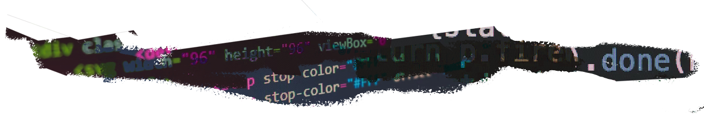

Week 3: Website as a garden, building out our plots


"A little bird told me, “Hyperlinks are the oxygen of the web.” How many links can you make in one
writing (poem, prose, manifesto, etc.)?" - Laurel Schwulst
Can you create a writing that transmits a feeling of unknowable depths? This prompt is to inspire you to
share a tale through network-like links. Similar to the exercise we did about folder-poetry, you can
click on links within HTML to build narratives or maybe even worlds. Here are a few prompts to help you
and a partner get started: